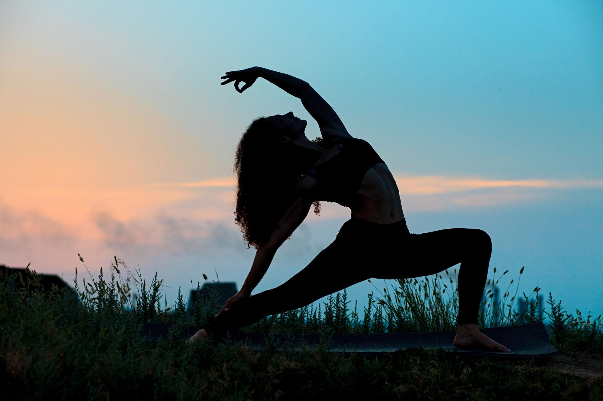
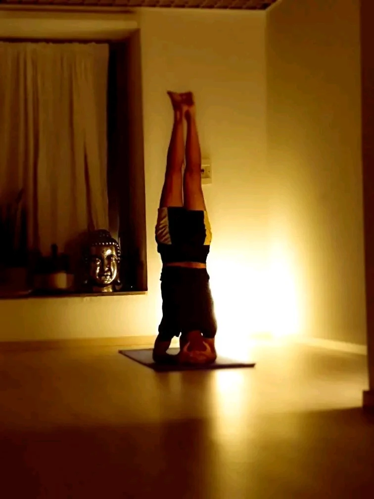

Centratura e respiro
Arrivi, ti ascolti e trovi un’intenzione per orientare l’attenzione.

Una pratica intensa e vigorosa per allenare il corpo, liberare la mente e ritrovare presenza.
Prova una lezioneIl Power Yoga è una pratica dinamica che unisce forza muscolare, resistenza, mobilità e respiro in un flusso continuo.
Le sequenze richiedono presenza e concentrazione. Il ritmo è energico, ma non diventa una gara: ogni proposta può essere modulata nel rispetto della propria esperienza.

Non è una gara: è energia che diventa presenza.
Ogni corpo è unico e ogni giorno è diverso. Le varianti permettono di praticare con sicurezza, rispettando il proprio livello e i propri obiettivi.
Arrivi, ti ascolti e trovi un’intenzione per orientare l’attenzione.
Un flusso di posizioni costruisce forza, mobilità e resistenza in connessione con il respiro.
Il ritmo rallenta, le tensioni si lasciano andare e il lavoro viene integrato.
A chi cerca una pratica attiva e desidera mettersi in movimento con attenzione. Le opzioni proposte permettono di modulare intensità e complessità.

Christian pratica yoga dal 2016 e ha conseguito il diploma Yoga e Medicina® RYT 250 Plus sotto la guida di Yoss Giancarlo Miggiano e Beatrice Giampaoli. Accompagna la pratica con energia, precisione e ascolto.
Scrivici per prenotare una lezione di prova.
Scrivici su WhatsApp